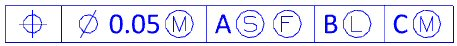
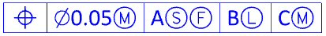

Standard font support for symbols
What is it?
When the Drafting or PMI text type is set to a standard font type, symbols embedded in a note or other text are also presented in a font style similar to the text font. If a standard font representation does not exist for a symbol, the symbol is displayed as single-stroked lines. NX font types, such as blockfont, still display the symbols as single-stroked lines.
|

|
NX 8.0 and earlier
|

|
NX 8.5
Symbol font files, which are provided with NX, map the display of a symbol to standard font types. Symbol font files are provided for all of the supported drafting standards, and are set by a Symbol Font File annotation preference and customer default.
Example of ANSI symbols |
Example of ISO symbols |
Where do I find it?
Symbol Font File preference
|
Application |
Drafting |
|
Toolbar |
Annotation→Annotation Preferences |
|
Menu |
Preferences→Annotation |
|
Location in dialog box |
Symbols tab→Symbol Font File |
Symbol Font File customer default
|
Menu |
File→Utilities→Customer Defaults |
|
Location in dialog box |
Drafting→General→Standard tab→click Customize Standard→Annotation→Symbols tab→Symbol Font File Note that you must start a new NX session before the change is available. |